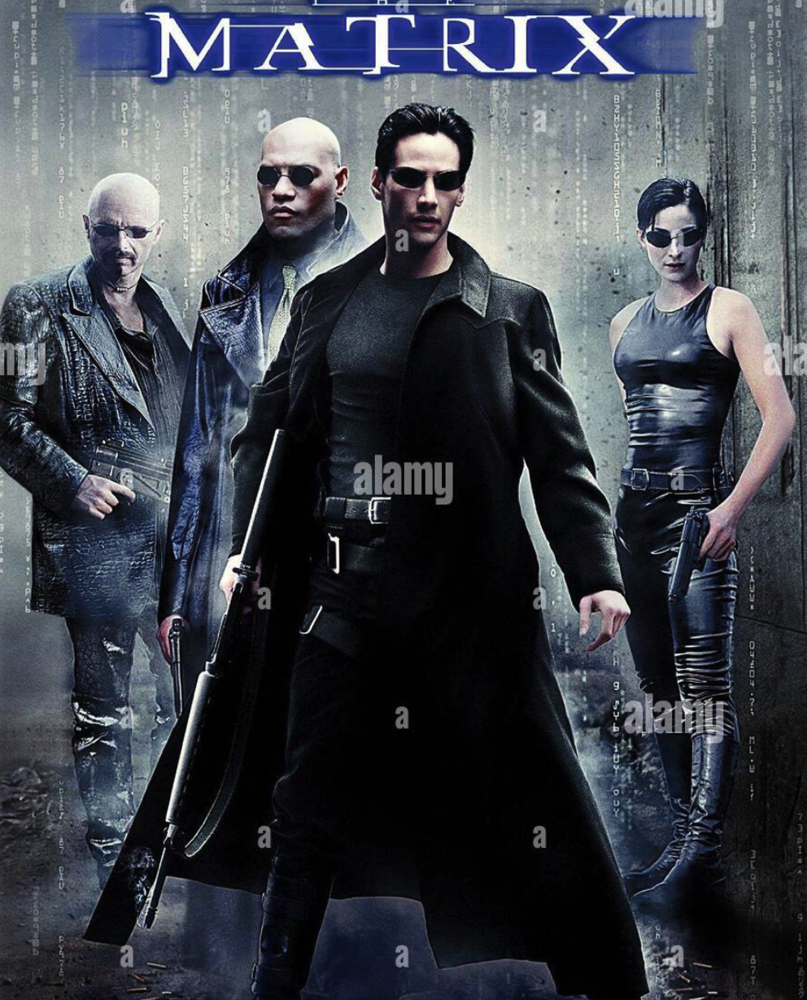
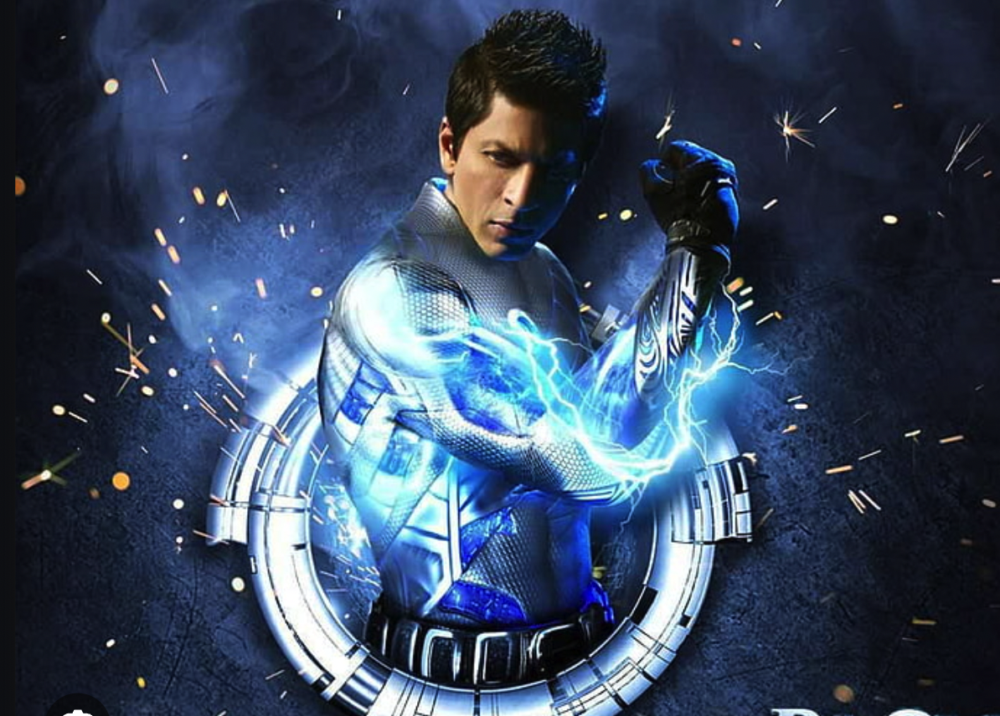
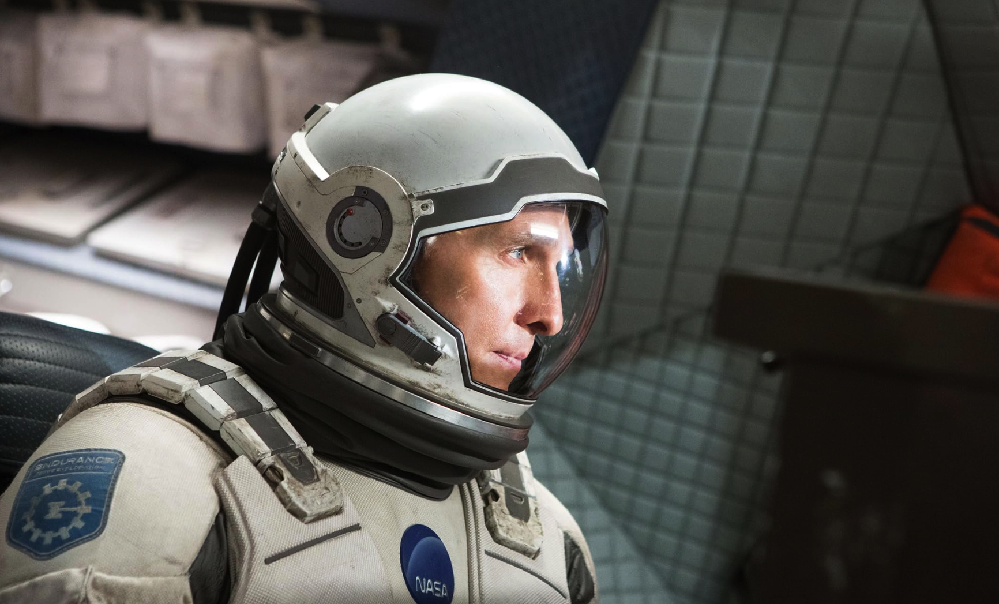

The Matrix" is a mind-bending masterpiece that perfectly blends action, philosophy, and groundbreaking visual effects. The concept of questioning reality, paired with iconic scenes like bullet time and Neo’s transformation. 
"Ra.One" is an ambitious attempt at bringing superhero sci-fi to Bollywood. 
Interstellar" is a stunning blend of science, emotion, and imagination 